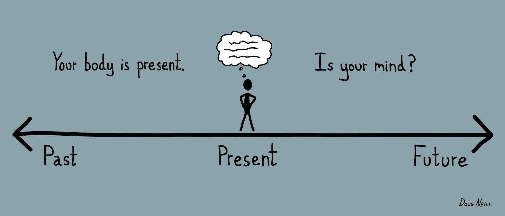

Mindfulness
The basic human ability to be fully present, aware of where we are and what we’re doing, and not overly reactive or overwhelmed by what’s going on around us.
While mindfulness is something we all naturally possess, it’s more readily available to us when we practice on a daily basis.
How do I practice mindfulness?
Mindfulness is available to us in every moment, whether through meditations and body scans, or mindful moment practices like taking time to pause and breathe when the phone rings instead of rushing to answer it.
- Set aside some time.
- Observe the present moment as it is.
- Let your judgements roll by.
- Return to observing the present moment as it is.
- Accept your wandering mind.
How do I practice meditation?
This meditation focusses on the breath, not because there is anything special about it, but because the physical sensation of breathing is always there and you can use it as an anchor to the present moment. Throughout the practice you may find yourself caught up in thoughts, emotions, sounds—wherever your mind goes, simply come back again to the next breath. Even if you only come back once, that’s okay.
- Sit comfortably.
- Notice what your legs are doing.
- Straighten your upper body
- Notice what your arms are doing.
- Soften your gaze.
- Feel your breath.
- Notice when your mind wanders from your breath.
- Accept your wandering mind.
- When you’re ready, gently lift your gaze (if your eyes are closed, open them).
- Notice your environment and feelings.